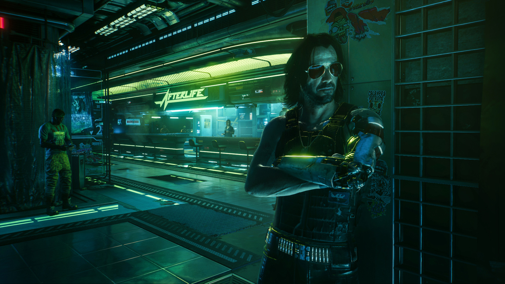
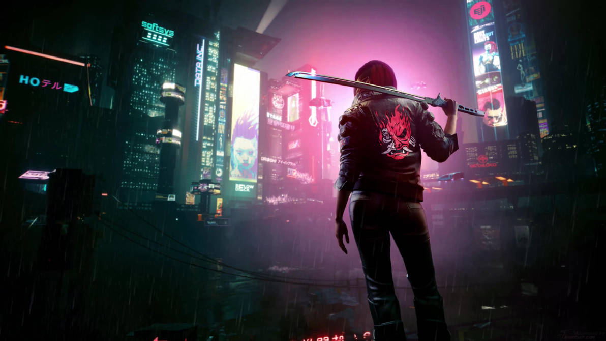
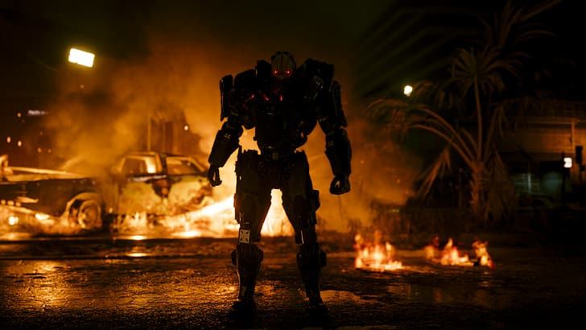
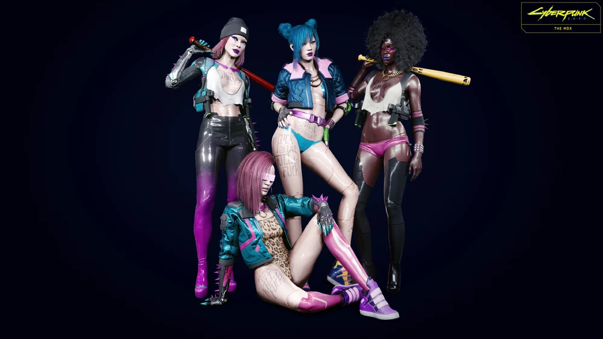
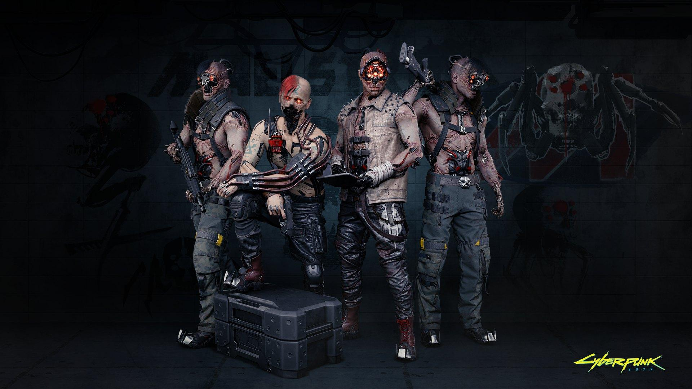

HISTORIA Y FUNDACIÓN
Fundada en 1994, originalmente bajo el nombre de Coronado City, esta megalópolis fue la visión utópica del visionario arquitecto y empresario Richard Night. Su objetivo era construir un paraíso capitalista definitivo, libre de la pobreza, el crimen y las sofocantes regulaciones gubernamentales de los viejos Estados Unidos. Sin embargo, su sueño duró poco: Night fue asesinado en 1998 por el crimen organizado, marcando el inicio del descenso de la ciudad hacia el caos.
Durante las décadas siguientes, las mafias controlaron las calles hasta que las Megacorporaciones, lideradas por gigantes como Arasaka y Militech, barrieron con los sindicatos durante las Guerras Corporativas, tomando el control absoluto de la infraestructura y las leyes. En el año 2023, la ciudad sufrió la detonación de una carga nuclear táctica en el corazón del Centro Corporativo, un evento que envenenó el cielo y reescribió la geografía local.
Hoy, en el año 2077, Night City es una selva de asfalto y neón hiper-estratificada. Desde las resplandecientes torres blindadas y fortalezas voladoras del City Center, donde los ejecutivos deciden el destino del mundo, hasta los sub-niveles tóxicos de Pacifica y Santo Domingo, donde la carne humana es el recurso más barato y el cromo es la única religión válida. Sobrevivir aquí no es un derecho; es un privilegio que se compra a base de balas y eurodólares.
// LEYENDAS DE NIGHT CITY

JOHNNY SILVERHAND
Líder de la banda de cromorock SAMURAI, desertor militar y la peor pesadilla del sistema corporativo. Johnny encarnó la furia callejera contra las megacorps. En 2023, lideró un asalto paramilitar contra la Torre Arasaka, detonando una bomba nuclear de bolsillo que mató a miles. Fue asesinado por Adam Smasher, pero su conciencia fue digitalizada por el programa Soulkiller. Hoy, sobrevive como un engrama digital, un fantasma cibernético atrapado en un biochip, esperando su oportunidad para quemar la ciudad de nuevo.

MERCENARIO "V"
El comodín más impredecible de la década de 2070. De orígenes difusos, V escaló rápidamente desde el anonimato de las calles hasta la cima de la cadena alimenticia en el Afterlife. Conocido/a por realizar el suicida golpe al Konpeki Plaza, donde robó el prototipo Relic de Arasaka, terminando con el engrama de Silverhand incrustado en su cerebro. En una frenética carrera contra su propia muerte neurológica, V ha destrozado bases corporativas enteras y desmantelado cúpulas de pandillas, reescribiendo las reglas de las leyendas vivas de Night City.

ADAM SMASHER
"La carne es débil". Esa es la única filosofía de Smasher. Antiguo mercenario de poca monta, fue destrozado en combate y reconstruido por Arasaka como una plataforma armamentística andante. Es 96% máquina cibernética de grado militar y cero por ciento empatía. Responsable de la muerte de Silverhand y de incontables leyendas de la calle, Smasher no siente dolor, miedo, ni piedad. Verlo descender del cielo en su chasis acorazado significa que Arasaka ha decidido que no mereces un funeral.
// SINDICATOS Y BANDAS

LAS MOXES
Nacidas de la sangre y el asfalto en 2076, Las Moxes se formaron tras el brutal asesinato de Elizabeth "Lizzie" Borden, la dueña de un club de striptease que defendía a capa y espada a sus trabajadores. Son un sindicato de autodefensa compuesto por muñecas (dolls), prostitutas, parias y minorías sexuales. Aunque son pequeñas y no están equipadas con cromo de combate pesado, su lealtad interna es de hierro. Controlan el Lizzie's Bar, su fortaleza en Watson, donde cazan a cualquier proxeneta o Tyger Claw que intente lastimar a los suyos.

MAELSTROM
Terror tecno-psicótico en su estado más puro. Operando principalmente en el distrito industrial de Watson y el infame club Totentanz, los Maelstrom son fanáticos de la modificación cibernética extrema e ilegal. Sus ritos de iniciación suelen involucrar la extirpación del rostro para instalar repulsivos conjuntos ópticos de múltiples lentes. Consumidores adictos al "Black Lace" (una droga que adormece el dolor y altera el sistema nervioso), no sienten empatía ni racionalidad. Comerciar con ellos es jugar a la ruleta rusa.

TYGER CLAWS
El sindicato más numeroso y arraigado de Japantown. Inspirados en las tradiciones yakuza, combinan códigos de honor feudales con negocios extremadamente sucios: trata de blancas, blanqueo de capitales, talleres de neurodanza ilegal y extorsión. Se los reconoce fácilmente por sus motos Yaiba Kusanagi, sus brillantes tatuajes bio-luminiscentes que les cubren la piel y su preferencia por el combate cuerpo a cuerpo con katanas térmicas. Son financiados y protegidos en la sombra por la megacorporación Arasaka.
// ARCHIVOS DESCLASIFICADOS
REPORTE 04-A
Aumento de actividad de pandillas no registradas en el sector norte de Watson. Posible enfrentamiento inminente por control territorial.
MERCADO NEGRO
Ingreso masivo detectado de implantes de asalto militar grado-Militech en clínicas clandestinas de Pacifica operadas por los Voodoo Boys.
ECONOMÍA LOCAL
Caída repentina del 14% en las acciones de corporaciones armamentísticas locales en la Bolsa de Eurodólares tras los últimos bloqueos corporativos.